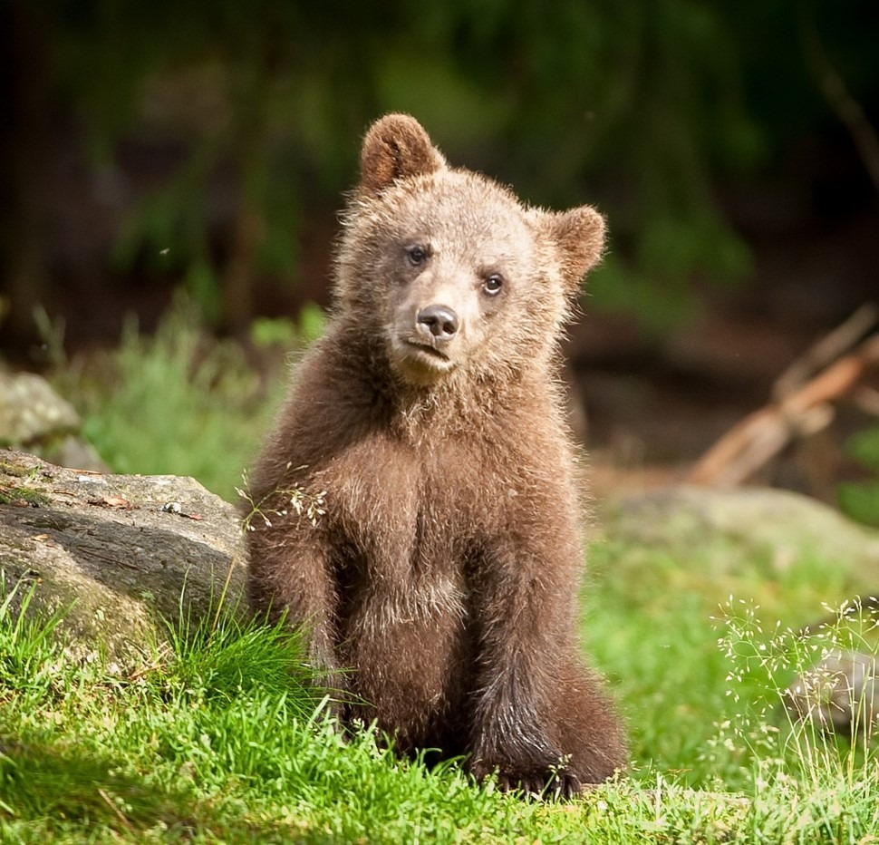
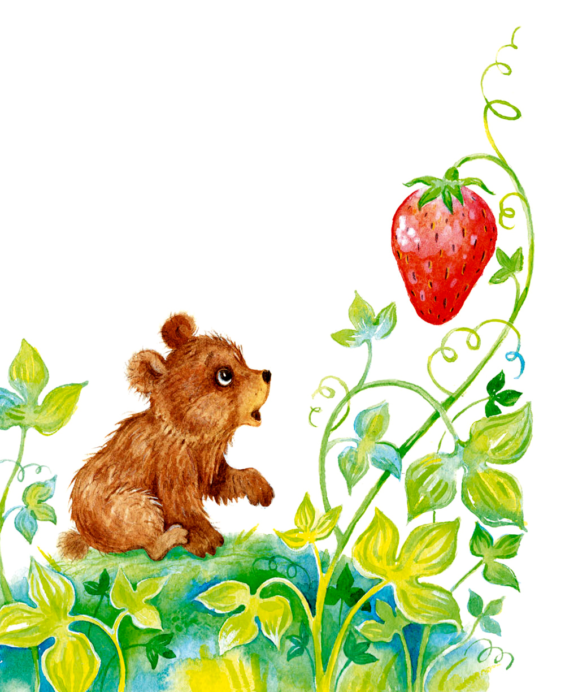
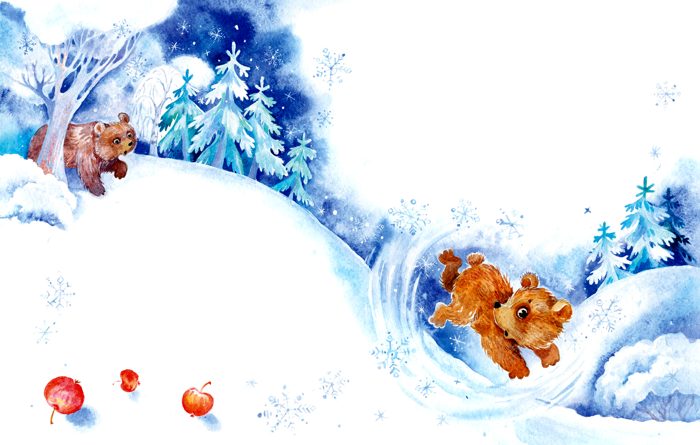
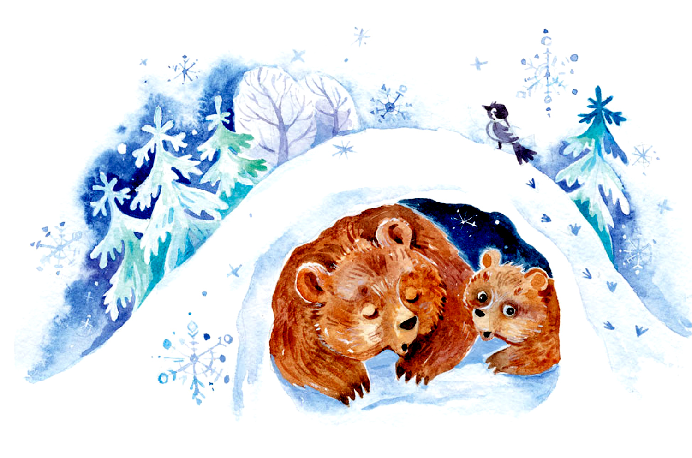

Медвежонок Бурик.
Татьяна Александрова
Жил-был маленький медвежонок Бурик. У него была мама Бурая медведица, большая, лохматая и добрая. А еще у него была сестра, маленькая, лохматая и тоже добрая. Сам медвежонок был маленький, лохматый, а добрый или нет, он не знал. Во всяком случае, он был очень веселый.
Целыми днями бегал он по мягкой траве, грелся на солнышке, а больше всего любил кататься с горки. Сядет на глину — вжж! — поехал! Плюх — прямо в реку! Его сестра и мама тоже сядут на глину — вжж! — поехали. Плюх! Вот было весело.
А еще мама и сестра показывали Бурику всякие сладкие ягоды. Медвежонок сразу стал очень быстро разыскивать их. И всегда звал маму и сестру. Значит, он тоже был добрый. Верно? Очень ему понравились и земляника, и черника, а малина — больше всего.

А еще он любил бегать за стрекозами и бабочками. Они летали от него в разные стороны, и медвежонок не поймал ни одной: ведь он не умел летать.
Ловить цветы было неинтересно: они сами лезли в лапы и были невкусные. А вот ягоды — другое дело.
— Ррр! — говорил Бурик. — Я тебя поймал! Ам! Поймал!
И ловил земляничнику и черничнику прямо ртом. А когда поспевала малина, разинешь пасть — ам! — и поймаешь целую кучу ягод. Сплошное удовольствие!
— Ешь, ешь, — говорила ему мама. — Запасайся на зиму!
Медвежонок не знал, что такое зима, но ел, ел.
А потом Бурик стал гоняться за разноцветными листьями. Ловить их было нетрудно, но они были невкусные. Не то что орехи, и яблоки, и груши. Бурик с удовольствием залезал на дикую яблоню и качался на ветках, а яблоки тоже качались и падали. Иногда и медвежонок падал вместе с ними, но ничего страшного тут не было.
Потом солнце куда-то делось, полили дожди, а ночи стали длинные и холодные. Бурику это совсем не понравилось. Он бегал и ворчал. Мама и сестра успокаивали его.
— Надо только найти хорошую берлогу, — говорили они, — и все будет в порядке.
И они искали, искали берлогу. Медвежонок им помогал.
— Вот это берлога? — спрашивал он, показывая на зеленый холмик весь в красных ягодах.
— Это брусника! — отвечали ему. — Ешь на здоровье!
— Не знаю, что такое ваша берлога, только поскорее находите ее, а то очень холодно, — ворчал Бурик.
И вот однажды мама, оставив его и сестру у речки, ушла одна искать берлогу. И тут медвежонок увидел, что совсем у него перед носом, перед ртом и глазами летают белые мухи. Бурик очень обрадовался и начал их ловить. Поймает, посмотрит — нет мухи, висит на шерсти росинка. Он попробовал ловить их языком и обрадовался: они просто таяли во рту. Но скоро белых мух нападало столько, что съесть их всех не было никакой возможности. И медвежонок заскучал. Тогда он захотел — вжж! — скатиться и — плюх! — в речку.

— В этом году очень ранние морозы, — уговаривала Бурика сестра. — Речка уже замерзла, и в ней нельзя купаться.
— Ну и пусть! — сказал Бурик, побежал на горку, — вжж! — поехал. И бум! — с размаху сел на твердую воду. Хорошо, что шуба у Бурика стала еще лохматее и пушистее, а то бы он здорово ушибся. И медвежонок обиделся на реку.
Тут его позвали сверху. Мама нашла берлогу! Очень обрадовался Бурик и со всех лап бросился за сестрой.
Глубоко в лес увела их Бурая медведица. Чаще и чаще стали попадаться упавшие деревья, огромные, корявые. На месте вырванных корней были ямы. Наверное, для того, чтобы в них проваливались медвежата. Бурик даже перестал ворчать и хныкать — так он устал.
И тогда Бурая медведица остановилась перед большой черной ямой возле упавшего дерева.
— Берлога! — торжественно сказала она. — Пожалуйста!
И они уснули в яме. А весной вылезли все из берлоги, живые, здоровые.
